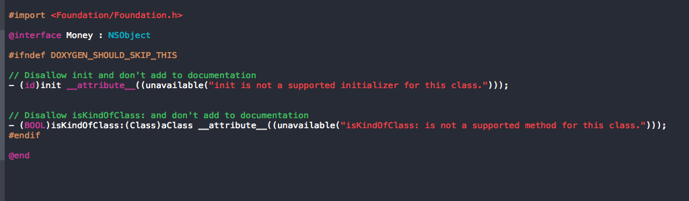
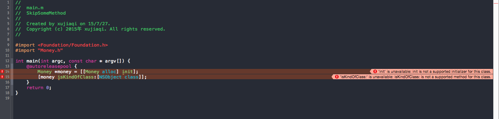
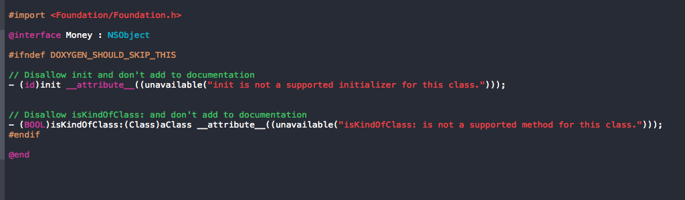
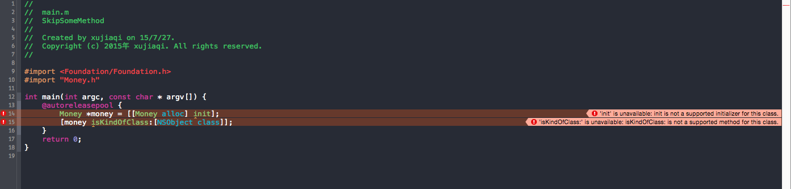

禁止某个Method
有时，不希望别人使用某个父类方法，比如，写了一个继承NSObject的类，不希望别人用init方法实例化。
那么可以通过这个方法禁止掉，并且报错提示给别人：
1 2 3 4 | |


Learn or Death
有时，不希望别人使用某个父类方法，比如，写了一个继承NSObject的类，不希望别人用init方法实例化。
那么可以通过这个方法禁止掉，并且报错提示给别人：
1 2 3 4 | |


需求：将UIAlertView的button文字改成指定颜色：

代码如下：
1 2 3 4 5 6 | |
然后要在点击按钮的时候将tintColor置空，因为默认UIView appearance的tintColor是为nil的：
1 2 3 4 5 6 | |